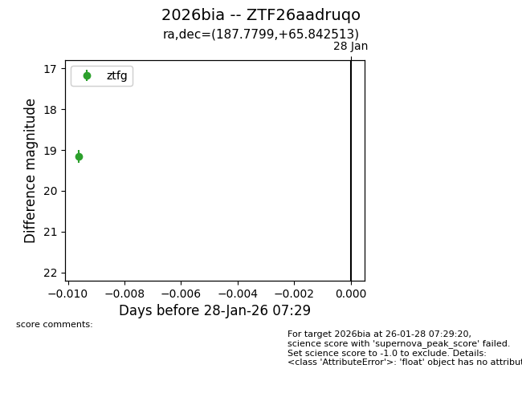
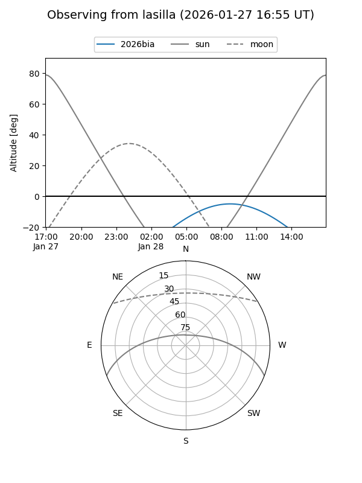

2026bia
Target 2026bia at 2026-01-28 07:31
Aliases and brokers:
FINK: link
Lasair: link
ALeRCE: link
TNS: link
YSE: link
alt names
ZTF26aadruqo (ztf,fink_ztf)
2026bia (tns,yse)
Coordinates:
equatorial (ra, dec) = 187.7799,+65.84251
equatorial (HMS+DMS) = 12:31:07.17,+65:50:33.05
galactic (l, b) = (126.2438,+51.15489)
Flags:
Photometry:
last ztfg=19.16
1 ztfg detections
Lightcurve

Visibility


Additional plots